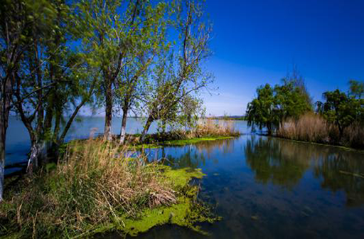
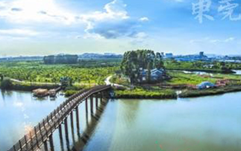
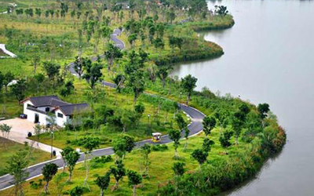
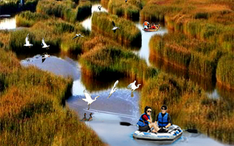
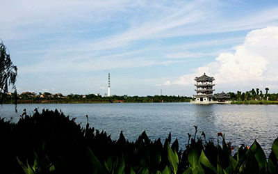
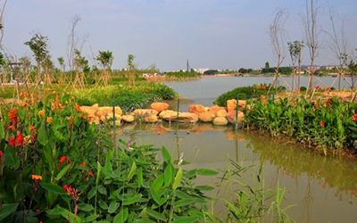
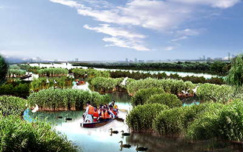

关于华阳

群山中的华阳湖如一颗璀璨的明珠
景区以高山截流的华阳湖为中心，随境造景，分别建有水上游乐区、民俗园区、茶文化园区、野果采摘区、会务区、别墅区等各种功能齐备的观光游览服务区。景区建筑红墙黄瓦，独具文化特色，在大自然的碧水青山映衬下，俨然衬托出了一片充满魅力的人间仙境。景区内，游人或可乘小艇劈波于华阳湖上，或可迈步湖畔长堤听山泉喷涌和松涛轰鸣，或可登临拜佛台感悟华阳大佛的广博心境，或可循小径去探索“望夫石”“观音洞”等美丽的传说中的中华民族的深厚文化底蕴。
华阳美景

- 水上森林
- 营造湿地水上森林景观，游客可以乘船在森林水道中划行，也可以漫步于森林中

- 花海田园
- 种植花卉形成花海和花坡景观，种植蔬菜、水果形成农田景观，游客可以采摘新鲜水果品尝

- 花船巡游
- 各种花卉争妍斗艳，让游人目不暇接。沿蜿蜒的水道，花船驶入花丛中，让游客与花亲密接触

- 水上森林
- 营造湿地水上森林景观，游客可以乘船在森林水道中划行，也可以漫步于森林中

- 花海田园
- 种植花卉形成花海和花坡景观，种植蔬菜、水果形成农田景观，游客可以采摘新鲜水果品尝

- 花船巡游
- 各种花卉争妍斗艳，让游人目不暇接。沿蜿蜒的水道，花船驶入花丛中，让游客与花亲密接触